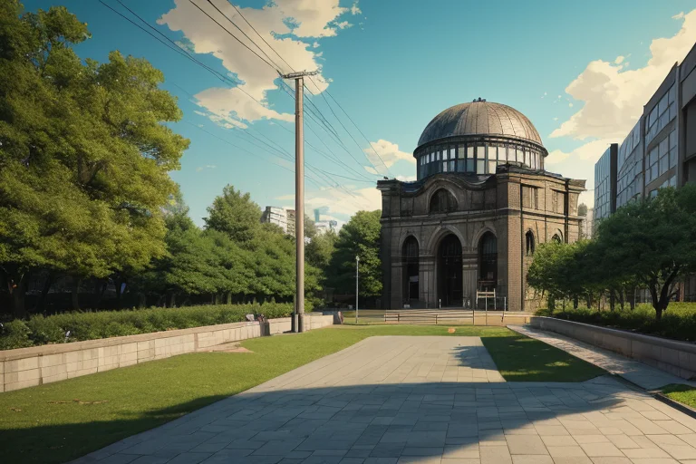
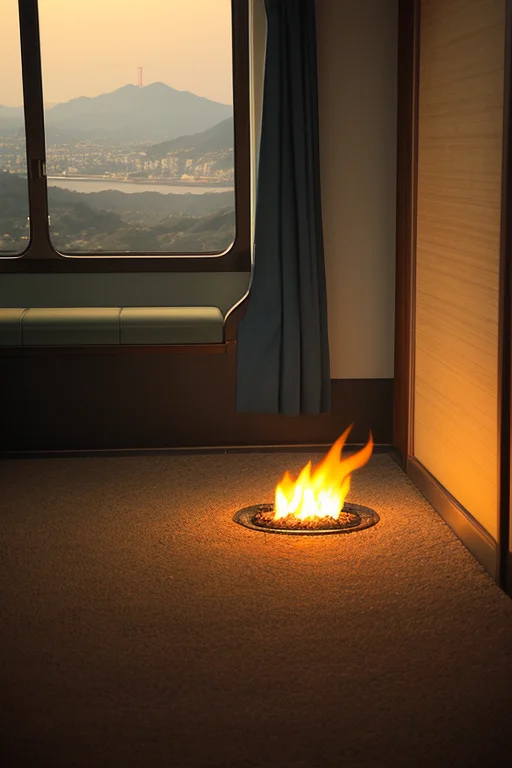

第一章 現実の広島
あなたはまだ気づいていない。この土地にも、王がいることを。
路面電車がカランコロンと音を立てて通り過ぎる。その軌道の先に、鉄骨の骸骨のように佇む原爆ドームが、青空を切り裂いている。平和記念公園では、世界から訪れた人々が、慰霊碑の前で静かに頭を垂れる。そのすぐ脇を、学校帰りの子どもたちが笑い声をあげて駆け抜けていく。過去と現在、鎮魂と日常が、この場所では不思議に混ざり合っている。
ヒロシマリア・フェニクスは、ドームの影に立って、その光景を見つめていた。彼女の目は、常に過去を見ている。一九四五年八月六日午前八時十五分。この一点で爆発した熱線と衝撃の記憶が、この土地の地層のように、幾重にも重なって彼女の内側に刻まれている。彼女は記憶の王である。忘れ去られることを許さず、風化することを防ぐのが役目だ。
しかし、彼女は思う。記憶を留めるだけでは、未来は救えないのではないか、と。

第二章 歪みの兆候
路面電車が平和記念公園前をゆっくりと走り抜ける。その車窓から、原爆ドームのシルエットが一瞬、切り取られる。ヒロシマリアは、その日常の光景の中に、微かな「歪み」を感じ取った。それは物理的な地殻のひずみではない。歴史の重みが、現代の空気を淀ませる、目に見えない圧力だ。
「フェニア」
傍らに佇む主席妖精が、静かに目を閉じた。彼女の役割は悲哀を吸収すること。公園を訪れる無数の思い――悲しみ、怒り、祈り――それらは全て、妖精フェニアを通して濾過され、王へと伝えられる。今日も、ある家族の慟哭が、ヒロシマリアの胸に深く沈んだ。
「記憶は、時に新たな亀裂を生む」彼女は呟く。忘れ去られる恐怖と、記憶に縛られる苦しみ。この土地は、その両極の間で絶えず揺れている。しまなみ海道を渡る風が、厳島から尾道へと、古い戦いの記憶を運んでくることもある。一五五五年、厳島の戦い。その血の記憶が、現代の些細な諍いを、理由もなく鋭くさせる瞬間があった。
彼女は手のひらをかざした。掌から微かな金色の光が、公園の空気をほんの少し、軽くした。救えるのは、せいぜいその程度だ。記憶そのものを消すことは、彼女の役目ではない。
第三章 王の葛藤
路面電車が平和記念公園前の停留所に滑り込む音が、午後の空気を切り裂いた。乗客の一人、中年の男性が、原爆ドームを車窓から一瞥し、深く、苦い息を吐いた。その吐息には、祖父から聞かされた八月六日の記憶と、今も続く隣国との軋轢に対する複雑な憤りが、濃密に混ざり合っていた。それは、単なる個人の感情を超え、土地に刻まれた「争いの記憶」そのものが、新たな対立の種として発芽しようとする瞬間だった。
ヒロシマリアは、厳島神社の回廊に佇み、海を隔ててその軋轢の波動を感じ取った。彼女の掌で、金色の炎が静かに揺らめく。この感情の連鎖を、ここで断ち切るべきか。記憶を鎮魂し、静めることが彼女の本来の役目だ。しかし、フェニアがそっと囁いた。「この憤りは、ただの怒りではありません。変革を求める叫びの、歪んだ形なのです」
彼女は目を閉じた。記憶を消去すれば、一時の平穏は得られる。だが、それでは何も生まれない。忘れ去られた苦しみは、必ず再び噴出する。彼女が為すべきは、記憶を「静める」ことではなく、その重みを「未来へ向ける」ことなのか。赤と金の炎が、彼女の内側で激しく渦巻いた。
第四章 妖精との対話
「王よ、あなたは『鎮魂』を選びましたね。」
フェニアは、平和記念公園の慰霊碑の前に立つ王の傍らに、静かに現れた。その声には、いつもの悲哀吸収の響きではなく、覚悟のようなものが宿っていた。
「しかし、鎮魂は、ただの『静寂』ではありません。静寂の後に、何を語り、何を為すか。それが問われています。」
路面電車の音が、遠くから聞こえる。王は、原爆ドームのシルエットを見つめたまま、問いかけた。
「この記憶の重みを、未来へ向けるとは？」
「それは、『忘れない』という意志を、形にすることです。」ミヤジマナが、厳島の潮風を纏って現れた。「かつての戦いも、この地の『歪み』の一つ。私たちは、その記憶を海に沈め、静めてきました。しかし、それだけでは、同じ波が繰り返される。」
フェニアが続ける。
「あなたが感じた『変革を求める叫び』。それは、記憶が単なる過去の記録ではなく、未来を形作る『種』である証です。この種を、ただ土に埋めるのではなく、芽吹かせること。それが、この王国の、そしてあなたの『再生』なのです。」
王は、手のひらに小さな赤と金の炎を灯した。それは、消えゆく火ではなく、新たに燃え上がる火種のように見えた。
第五章 微調整と余韻
平和記念公園の「平和の灯」は、今日も静かに燃え続けていた。ヒロシマリア・フェニクスは、その前に立っていた。彼女の手には、フェニアとミヤジマナから託された、この土地のすべての鎮魂の念が、赤と金の小さな火玉として揺らいでいる。彼女は感情を持たないはずの王だった。だが今、彼女の内側には、この島国で育まれた「重み」が確かにあった。それは悲哀ではなく、未来へ向かう意志の重みだ。
「変革を求める叫び」は、歴史の大きな歪みとなって、この地を貫いていた。彼女の使命は、それを消すことではない。ほんの少し、その流れを曲げ、別の可能性への「種」を残すことだ。彼女は火玉を胸に押し当てた。全身を、王国の記憶そのものが駆け巡る。原爆の閃光。厳島の潮騒。路面電車の音。お好み焼きの匂い。そして、無数の「もう二度と」という祈り。
彼女は、その祈りの一点を選んだ。1945年8月6日、ある少女が瓦礫の下で握りしめていた、焼け焦げたもみじ饅頭。彼女は、その少女の手からほんの一瞬、痛みを吸い取り、代わりに「おいしいね」という、誰かの記憶の欠片を微調整として添えた。それは歴史を変えはしない。ただ、絶望の深淵で、ほんの一筋の光を感じさせる、小さな余韻。
代償は大きかった。その一瞬の調整のために、彼女は自らの存在の一部を「記憶」としてその場に置き去りにした。彼女の姿は以前より少しだけ薄くなり、感じる感情も希薄になった。しかし、彼女の紋章である鳳凰は、消えることのない再生の火を、より強く輝かせていた。
彼女は静かに目を開けた。平和の灯の炎が、今日も変わらず灯っている。未来を救うのは、過去そのものではない。過去から紡ぎ出され、今を生きる者たちが未来へと託す、記憶の「種」なのだ。彼女はそれを、これからも微調整し続ける。
あなたの町にも、王がいる。